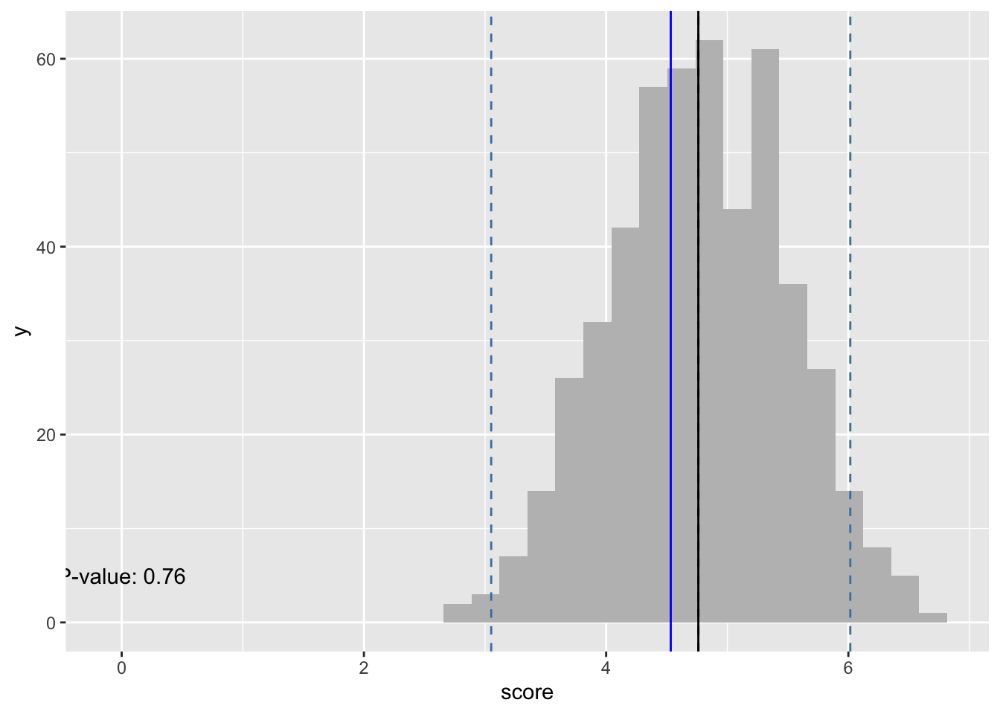

dat <- read.csv("/Users/ryangifford/Desktop/Data Science/Sampling Distributions/compliance_scores.csv") # read in the data
# define parameters using actual calculations
true_pop_mean <- mean(dat$score)
pop_stdev <- sd(dat$score)
sampling_distribution <- function(sample_size, trials){
data <- data.frame(score = integer()) # creates empty data frame
for(i in 1:trials) { # Head of for-loop
new <- mean(dat[sample(nrow(dat), sample_size), 1]) # Create new row (a sample mean)
data[nrow(data) + 1, ] <- new # Append the new row to existing df
}
# now we have a df of sample means and can now analyze the distribution of the
# sample means
#############################
# Confidence Intervals
############################
# confidence level: 1-(alpha/2). In this case 0.975
sample <- data.frame(score = dat[sample(nrow(dat), 30), 1]) # create a sample
sample_mean <- mean(sample$score) # calculate mean of sample (blue line)
sample_stdev <- sd(sample$score) # the sd of the sample can be used to estimate sigma
n <- nrow(sample) # number of observations
std_err_mean <- sample_stdev/sqrt(n) # the standard deviation of the distribution of sample means
t_value <- qt(0.975, 49, lower.tail=TRUE) # find t value. Conf level, degrees of freedom. If this was a normal distribution, the z-score would be 1.96. In other words, 95% of the data would be found within the mean plus/minus 1.96 stdevs.As the degrees of freedom increase, the tails get fatter.
t <- (sample_mean-true_pop_mean)/(std_err_mean) # think of this number, test stat, as the number of standard errors away from the sample mean
p <- 2*pt(-abs(t), df=length(sample$score)-1) # p-value
conf_int_plus <- sample_mean + t_value * (sample_stdev/sqrt(n)) # blue dashed line
conf_int_minus <- sample_mean - t_value * (sample_stdev/sqrt(n))# cond int. or
# in other words, critical values. The t-value come from the qt() function.
# if the test statistic, t, exceeds the confidence interval, you reject null
# the standard error of the mean (x_bar / sqrt(n)) is the 'standard deviation'
# of the sampling distribution. SEM should approximate sd(data$score) from above
# function.
ggplot(data, aes(x=score)) +
geom_histogram(fill = "grey") +
geom_vline(xintercept = mean(data$score), linetype = "dashed") +
geom_vline(xintercept = true_pop_mean) +
geom_vline(xintercept = sample_mean, color = "blue") +
geom_vline(xintercept = conf_int_plus, color = "steelblue", linetype = "dashed") +
geom_vline(xintercept = conf_int_minus, color = "steelblue", linetype = "dashed") +
annotate("text", x = 0, y = 5, label = paste("P-value: ", round(p,2), sep = ""))
}
sampling_distribution(sample_size = 30, trials = 500)
########################
# R T test
########################
# ttest <- t.test(sample$score, mu = true_pop_mean)
# ttest$statistic